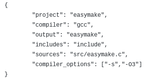

Compiling it
You will first have to get the source on the Github repo
Now open a terminal and cd to the directory where you cloned/extracted the source code
Now to compile it follow these commands:
GCC:
gcc src/easymake.c -Iinclude -s -O3 -o easymake
TCC:
tcc src/easymake.c -Iinclude -O3 -o easymake
CLANG:
clang src/easymake.c -Iinclude -O3 -o easymake
MSVC:
cl src/easymake.c /I include /O2
You may want to add easymake binary to PATH
Your first build file
Now that you have compiled easymake
its now time to get your first build file ready!
the build file extension is .ezmk, it is recommended to call your build file
build.ezmk
build files use json syntax wich makes them really easy
heres how a basic build file looks like this:
heres a version that you can copy paste:
{
"project": "example",
"compiler":"gcc",
"output": "example",
"includes": "include",
"sources": "src/easymake.c",
"compiler_options": ["-s","-O3"]
}
now you can do easymake on the folder where you put your build file
and it should compile
More about build files
On includes, sources and compiler options you can also do a array
like you do on the compiler_options of the example
heres an example:
{
"project": "example",
"compiler":"gcc",
"output": "yes",
"includes": ["include","/path/to/include/"],
"sources": ["src/*.c","/path/to/file/file.c"],
"compiler_options": ["-s","-O3"]
}
What does every value on the build file do?
project
The project name duh.
Example:
"project":"project name"
compiler
The compiler duh. We have not tested all the compilers yet
Example:
"compiler":"g++"
output
The output executable name, can also be inside a folder.
Example:
"output":"bin/output"
includes
The folders that are going to be included. Can be array or a single one.
Example:
"includes":["include","/usr/include/","path/to/idk/includes/i/guess/"]
sources
The source files that can be compiled. Can be array or a single one.
You can also do a entire folder by doing folder/*.(filetype(.c/.cpp))
Example:
"sources": ["src/main.cpp","src2/*.cpp"]
compiler_options
Extra flags you can give the compiler. Can be array or a single one.
Example:
"compiler_options": "-Wall"